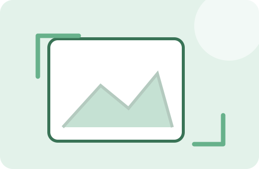
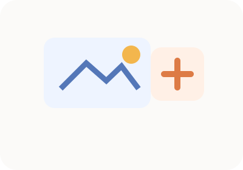
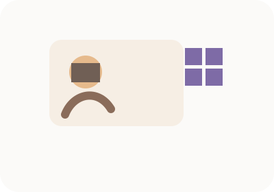
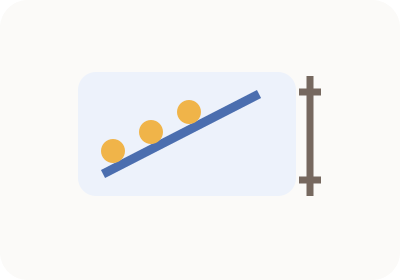

용량 최적화
이미지 용량 줄이기
원본과 압축 결과를 비교하며 품질과 용량을 조절합니다.
이미지 센터FREE
이미지 압축·크기 변경·포맷 변환·자르기·회전·EXIF 제거·색상 추출을 한곳에서 바로 사용합니다.

원본과 압축 결과를 비교하며 품질과 용량을 조절합니다.

가로·세로 픽셀을 바꾸고 결과 크기를 바로 확인합니다.

JPG·PNG·WebP 등 브라우저에서 지원하는 형식으로 변환합니다.

필요한 영역만 남겨 새 이미지로 저장합니다.

90도 회전과 좌우·상하 반전을 빠르게 적용합니다.

사진의 위치·기기 등 메타데이터 제거용 도구입니다.

이미지에서 원하는 픽셀의 색상값을 확인합니다.

사진을 100KB·200KB·500KB 등 원하는 목표 용량 이하로 자동 압축합니다.

얼굴·차량번호·주소·이름 영역을 직접 지정해 모자이크하거나 가립니다.
3×4cm·3.5×4.5cm 등 증명사진 비율과 픽셀 크기를 맞춥니다.

cm·DPI에서 필요한 픽셀을 계산하고 인쇄 크기를 역산합니다.
이미지는 가능한 작업을 브라우저 안에서 처리하며 원본과 결과를 직접 비교할 수 있게 구성했습니다. 각 도구는 실제 실행 화면뿐 아니라 사용방법, 처리 기준, 예시, 주의사항과 다음 작업에 필요한 관련 도구까지 이어지도록 보강했습니다.
현재 브라우저에서 처리하도록 구현된 도구는 사용자의 브라우저 안에서 작업합니다. 외부 라이브러리를 불러오는 경우 인터넷 연결은 필요할 수 있습니다.
대부분의 도구는 모바일 브라우저에서도 사용할 수 있도록 반응형으로 구성하지만, 큰 PDF나 고해상도 이미지는 PC가 더 안정적일 수 있습니다.